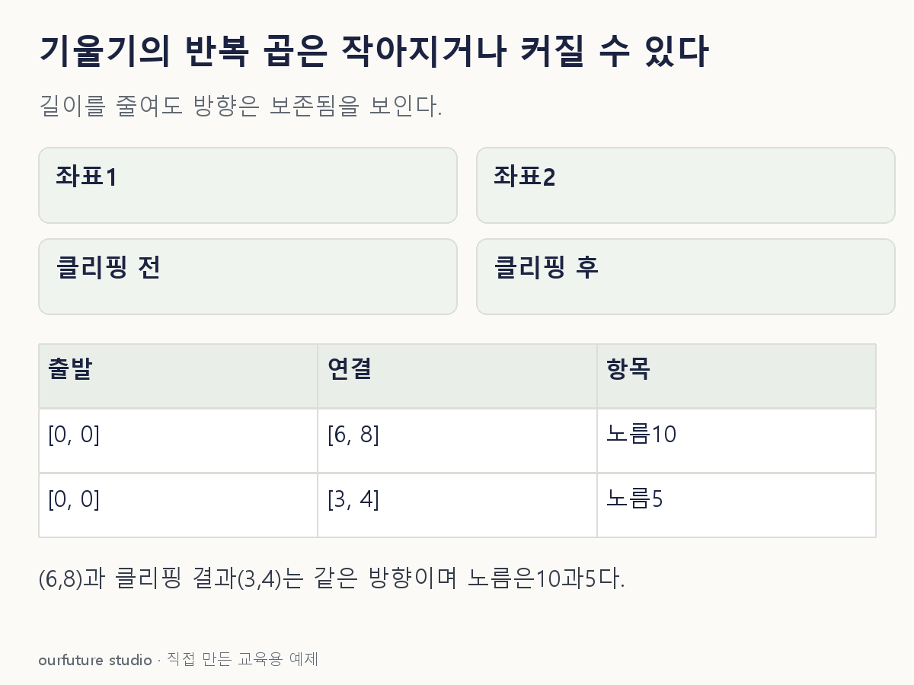

조건을 바꾸며 확인하기
L2 노름 클리핑이다. 좌표별 값 클리핑·소실 복원·전체 신경망 학습을 구현하지 않는다. 체험의 큰 결과 숫자는 클리핑 뒤 노름이며, 문제에서 묻는 벡터 좌표와 구별한다. 기본값에서는 노름5, 좌표(3,4)다.
설명 그림과 비교하기
아래 그림과 표는 고정된 설명 예제입니다. 기본·변형 중 어떤 조건인지 캡션을 읽고, 바꾼 입력의 결과는 계산 칸에서 확인하세요.

같은 문제를 직접 골라 보기
기울기 g=(6,8), L2 노름 10. 노름 문턱 5로 방향을 유지해 클리핑한다.
조건을 더 바꾸면?
기울기가 (0.03,0.04), 같은 문턱 5라면 어떻게 변하는가?
변형 풀이 확인
그대로 (0.03,0.04).
노름 0.05가 문턱보다 작아 배율 min(1,100)=1이다. 작은 기울기를 5까지 키우지 않는다.
노름 클리핑은 큰 길이만 줄인다.